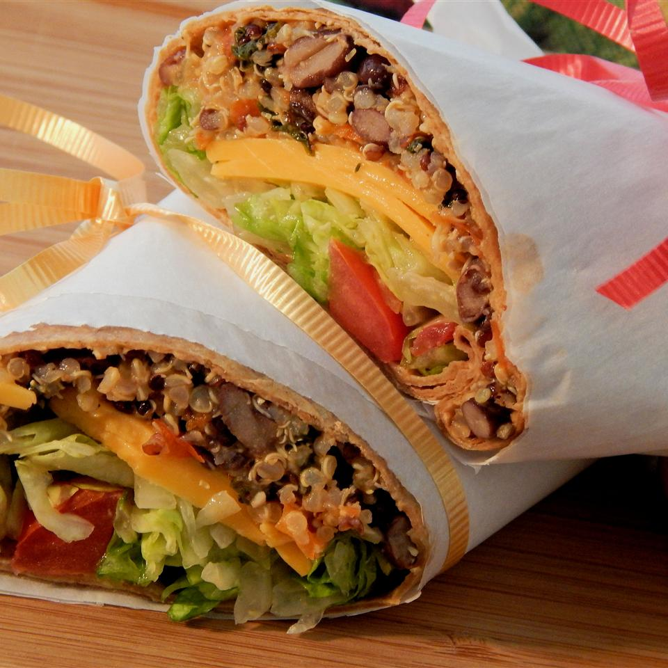

Southwest Roll-Ups
Description
Great as an appetizer or snack, these roll-ups are sure to get your taste buds tingling for more!

Cooking Information
- Prep: 15 mins
- Cook: 20 mins
- Total: 35 mins
- Servings: 4
- Yield: 4 servings
Nutrition Facts
Per Serving: 539 calories; protein 21.2g; carbohydrates 88.7g; fat 11g; cholesterol 7.4mg; sodium 1036.1mg.
Ingredients
- 2 cups water
- 1 cup quinoa
- 1 (16 ounce) can black beans, rinsed and drained
- 1 red bell pepper, chopped
- 1/2 cup fresh spinach leaves
- 2 tablespoons barbeque sauce
- 1 tablespoon chopped garlic
- 1 pinch ground cumin, or more to taste
- 1 pinch cayenne pepper, or more to taste
- 1/4 cup shredded Cheddar cheese
- 4 (10 inch) flour tortillas, warmed
Directions
- Step 1
- Mix turkey with Worcestershire sauce and Cajun seasoning in a bowl.
- Step 2
- Cook bacon bits, jalapeno pepper, and minced garlic in a skillet over medium-high heat until bacon bits start to stick, about 4 minutes. Add the turkey mixture; cook and stir until no pink remains, about 4 minutes.
- Step 3
- Place 2 ounces of turkey mixture in each flatbread. Place 4 pickle slices, 1/2 cup spinach, and 1 pepper Jack cheese slice in each wrap.